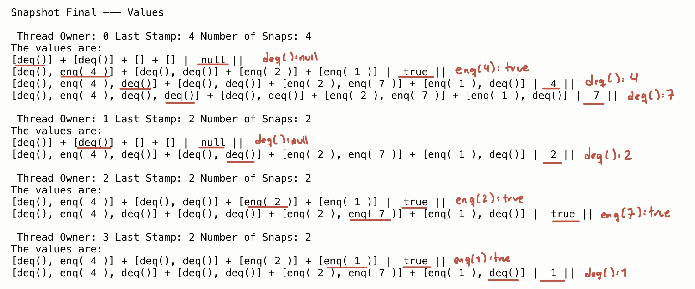
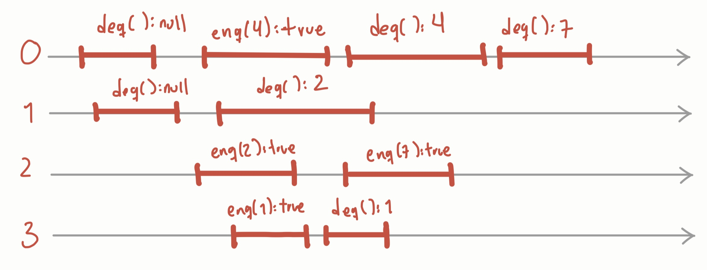
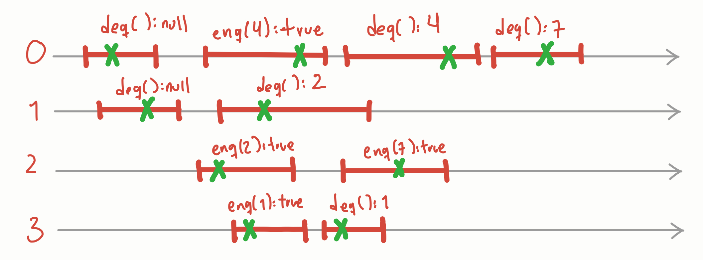

Contexto
Los snapshots atómicos son objetos concurrentes comunes, consisten de un arreglo de \(n-\)registros MRSW, los hilos pueden actualizar su propio registro (update()) o leer todos de forma atómica o instantánea (scan()).
Se han utilizado para simplificar el diseño y la verificación de algoritmos concurrentes de memoria compartida (Attiya, Herlihy, y Rachman 1995); por ejemplo, en el problema de bounded timestampping (Gawlick, Lynch, y Shavit 1992), en general para construir objetos wait-free (Attiya, Lynch, y Shavit 1994) y para verificar algoritmos en tiempo de ejecución (Bonakdarpour et al. 2022; Castañeda y Rodrı́guez 2023).
Los algoritmos concurrentes son difíciles de construir y verificar, existen diferentes técnicas para verificarlos. Una técnica muy famosa es la Verificación formal, por ejemplo, se puede especificar un algoritmo concurrente utilizando lenguajes especializados como TLA+ y Coq, de esta forma se comprueban todos los posibles estados del algoritmo (McCaffrey 2015). También existen técnicas más ligeras (utilizan menos cómputo y son más fáciles de aplicar) como la Verificación en tiempo de ejecución, consiste en obtener la ejecución actual (interfaz de comunicación) para decidir si la ejecución es correcta o no hasta el momento (interfaz de verificación).
En esta práctica utilizaremos objetos snapshots atómicos y collects para construir una interfaz de comunicación para verificar cualquier algoritmo concurrente en tiempo de ejecución.
El modelo para obtener la ejecución de cualquier algoritmo es el siguiente:
Por ejemplo, en el código ([p2]) verificamos un algoritmo concurrente de una cola no bloqueante no acotada (). Se ejecutó el programa para 10 operaciones aleatorias de la cola, en la Figura a continuación se observa lo que se obtiene, por cada hilo (de 0 a 3) se devuelven un conjunto de vistas, en cada vista se muestran las operaciones concurrentes o precedentes a la última operación del hilo. El hilo 0 primero hizo un \(deq()\), devolvió \(null\), y solo hay una operación precedente o concurrente a su operación: \(deq()\) del hilo 1. Sabemos que las operaciones son concurrentes (\(deq()\) del hilo 0 y del hilo 1) porque el \(deq()\) del hilo 0 también está en la primer vista correspondiente su \(deq()\).

De hecho, podemos obtener la historia de la ejecución, si seguimos las siguientes reglas (Figura 3):
En cada vista existe una operación asociada \(op_a\) (subrayada en rojo), decimos que es la vista de \(op_a\).
Una operación \(op_x\) en la vista de la operación \(op_a\) es precedente si \(op_a\) no está en la vista de \(op_x\).
Una operación \(op_x\) en la vista de la operación \(op_a\) es concurrente si \(op_a\) está en la vista de \(op_x\).

Finalmente, podemos verificar si esta historia es linealizable, existen algoritmos para verificar la linealizabilidad de un algoritmo concurrente, sin embargo, no ahondaremos en ellos. La idea es que cualquier hilo puede obtener la historia de la ejecución y verificarla de forma local.

Ejemplos
En el siguiente link: https://github.com/surindt/FC_CConcurrente/tree/main/Programas_P5/unam.fc.concurrent.practica5/src/unam/fc/concurrent/practica5
Programa 1 (ExecuteSnapshot): Programa que ejecuta el WFSnapshot, imprime el contenido de los snaps actualizados por update() Utiliza la clase WFSnapshot\(<T>\), la cual utiliza las clases StampedSnap y StampedValue.
Programa 2 (ExecuteSnapshotQ): Programa que ejecuta el WFSnapshotH, imprime el contenido de value del snapshot ssR. En el ssR se guardan las respuestas y las vistas, las vistas son un scan() del ssI de invocaciones. Utiliza la clase WFSnapshotH\(<T>\), la cual utiliza StampedSnapH y StampedValue. El WFSnapshotH es diferente al WFSnapshot porque permite guardar todas las operaciones hechas en values y todos los snaps hechos en snap. Para ello se modifica StampedSnapH (a diferencia de StampedSnap) y se le agregaron listas para values y snap.
Además utiliza la clase \(RunnableQ<T>\) para generar las operaciones aleatorias y realizar el modelo 1.
Programa 3 (SimpleSnapshot): Programa del snapshot obstruction-free
Ejercicios
Entrega en un pdf las respuestas de los ejercicios que no requieran implementarse y añade una breve descripción de los programas que entregas (sus nombres y qué hacen). El pdf como el directorio deben ir con el nombre y apellido paterno de la persona que entrega en Classroom (por ejemplo NombreApellido.pdf)
Debes realizar un programa en cada ejercicio que indique “Implementar”.
El formato y el medio de entrega los indicará tu ayudante de laboratorio.
Recuerda que debes utilizar Java 21 LTS.
Si no compila utilizando Java 21LTS o si no se entrega la breve descripción de los programas se penalizará.
Tiempo de elaboración:\(\approx\) 2hr
Total de puntos: 100
Implementa el mismo modelo que en el programa ([p2]), reemplaza el Snapshot Wait-free por un Snapshot Obstruction-free (código en [p3]).
A partir de tu implementación, dibuja o describe una ejecución de 10 operaciones (como la de la Figura 3). ¿Observas alguna diferencia al utilizar un Snapshot obstruction-free en vez de uno wait-free? Argumenta porque crees que sucede así.
Implementa el mismo modelo que en el programa ([p2]), reemplaza el Snapshot Wait-free por un Collect, para ello modifica el scan() del Snapshot obstruction-free (código en [p3]) como en la Tarea 4, en vez de hacer \(double-collects\) haz solo un \(collect\).
Los collects, a diferencia de los snapshots, no son objetos atómicos, de hecho, ni siquiera tienen especificación secuencial. Sin embargo, analizando lo que se escribió en el collect, ¿crees que es posible obtener la ejecución así como con los snapshots? ¿Qué diferencias observas? Justifica tu respuesta
Investiga y escribe de forma breve en qué consiste el lenguaje TLA+, cuándo fue inventado y enumera 3 empresas que lo utilicen.